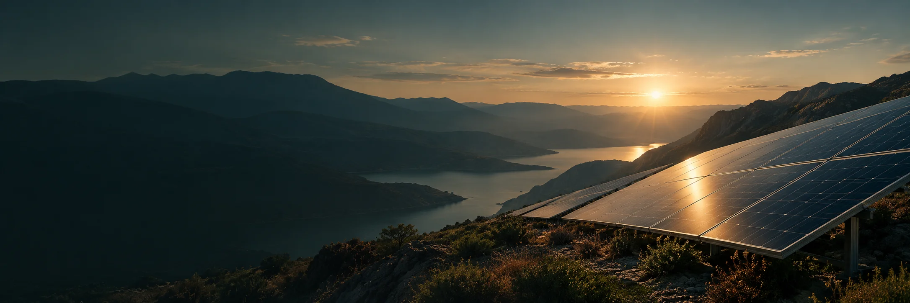
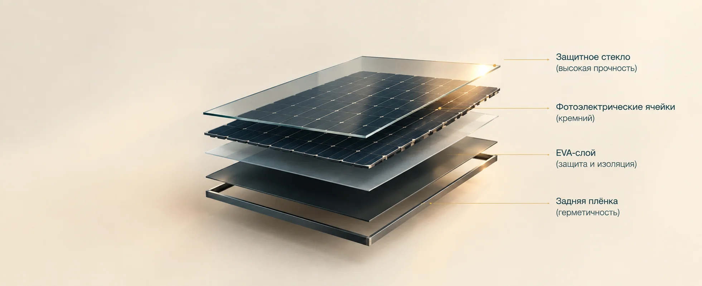
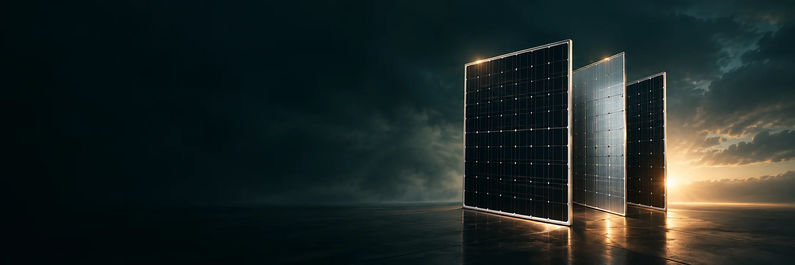
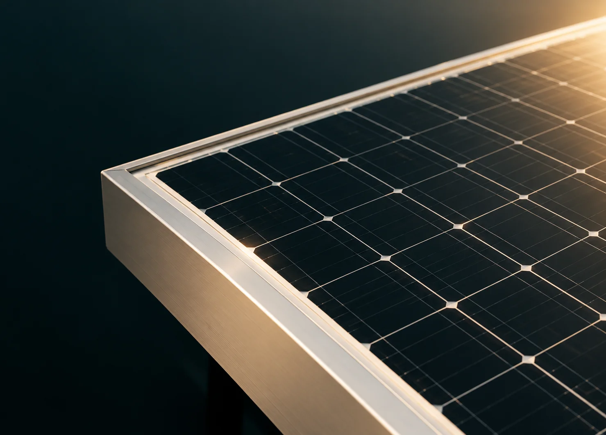

СОЛНЕЧНЫЕ
ПАНЕЛИ
Преобразуют солнечный свет в электричество
и являются основой любой солнечной
энергетической системы.
КАК РАБОТАЮТ
СОЛНЕЧНЫЕ ПАНЕЛИ
Солнечные панели состоят из фотоэлектрических элементов, которые поглощают солнечный свет и преобразуют его в постоянный электрический ток.
Чем выше качество ячеек и технология производства, тем больше энергии вырабатывает панель и тем выше её эффективность.

СВЕТ
Солнечные лучи попадают на поверхность панели.
ГЕНЕРАЦИЯ ТОКА
Фотоэлектрические элементы создают постоянный ток.
ПРЕОБРАЗОВАНИЕ
Инвертор преобразует ток в переменный (AC).
ЭНЕРГИЯ ДЛЯ ОБЪЕКТА
Электроэнергия поступает в сеть или на оборудование.
ТИПЫ СОЛНЕЧНЫХ ПАНЕЛЕЙ
Мы предлагаем современные типы панелей с высокой эффективностью и длительным сроком службы. Подберем оптимальный вариант под ваш задачи и бюджет.
ПЕРЕЙТИ К КАТАЛОГУПОЧЕМУ ОПТИМАЛЬНЫЙ ВЫБОР —
МОНОКРИСТАЛЬНЫЙ ДВУСТОРОННИЙ?
Монокристаллические двусторонние панели — это лучшее сочетание эффективности, надёжности и долгосрочной выгоды для большинства объектов.
ПЕРЕЙТИ В КАТАЛОГ
ТЕХНИЧЕСКИЕ ХАРАКТЕРИСТИКИ
Современные солнечные панели обладают высокой эффективностью, надёжностью и устойчивостью к внешним условиям.
СМОТРЕТЬ В КАТАЛОГПРЕИМУЩЕСТВА
Выбирая солнечные панели, вы получаете стабильную выработку энергии, снижение затрат и долгий срок службы.
ЭФФЕКТИВНОСТЬБольше энергии с той же площади.

ЭНЕРГИЯ СОЛНЦА
ДЛЯ ВАШЕГО ОБЪЕКТА
Подберем оптимальные солнечные панели
с учетом вашего объекта и задач.
В СОЛНЕЧНОЙ ЭНЕРГЕТИКЕ